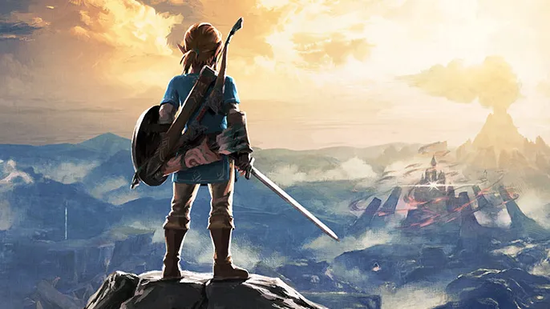

Nelle terre frastagliate di Elyndor, dove le mappe si ridisegnano da sole e i venti portano voci dimenticate, tre viandanti si trovano uniti da un mistero antico quanto il cielo stesso…
Cercatore di segreti e disegnatore di sentieri invisibili, Kael è un mezzelfo solitario che ha dedicato la sua vita a inseguire i sussurri delle stelle. Le sue mappe non segnano solo luoghi: raccontano storie, rivelano ferite della terra, e conducono chi le segue verso ciò che cerca... o ciò da cui fugge. Il frammento che porta con sé, inciso con rune dimenticate, è solo il primo indizio di una verità sepolta oltre i confini del mondo conosciuto.
Una guerriera dai capelli rossi come il fuoco che l’ha salvata da bambina. Un tempo capitana delle Guardie Cremisi di Tyr Vhalor, Branna ha rinunciato all’onore per seguire la voce di una colpa mai espiata. Porta con sé una spada forgiata nel cuore di un meteorite, che s’illumina quando la menzogna è vicina. È protettiva, silenziosa, ma ogni sua cicatrice parla di battaglie combattute non solo contro il nemico… ma contro sé stessa.
Un folletto dai mille nomi e dal sorriso sempre un passo avanti. Può cambiare volto a piacimento, e la sua voce ha il potere di far piangere una roccia o ridere un re. Nessuno sa da dove venga davvero, ma dice di essere nato nel sogno di un drago addormentato. Le sue storie prendono vita – letteralmente – e spesso diventano più reali del mondo che lo circonda. Dietro la sua allegria si nasconde un destino che lui stesso finge di non voler conoscere.